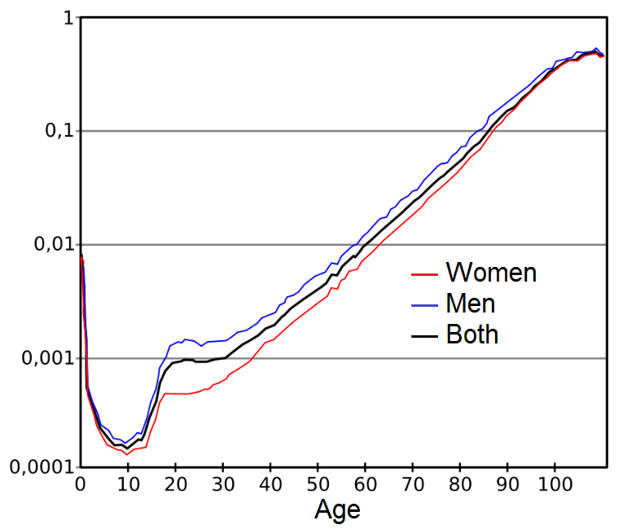
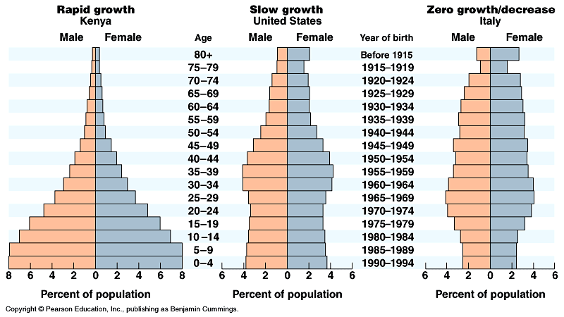
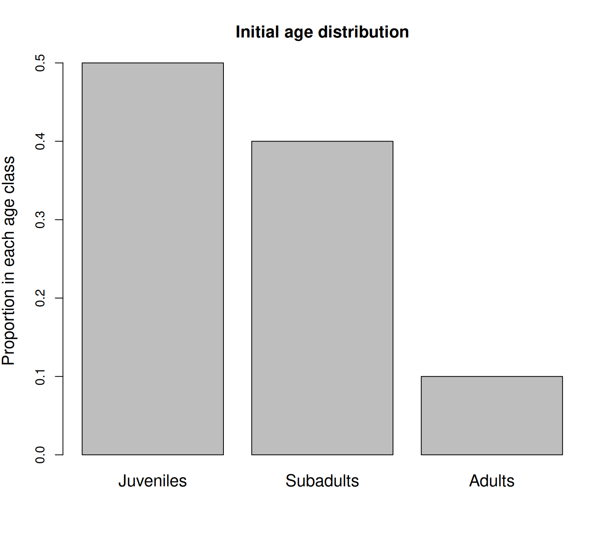
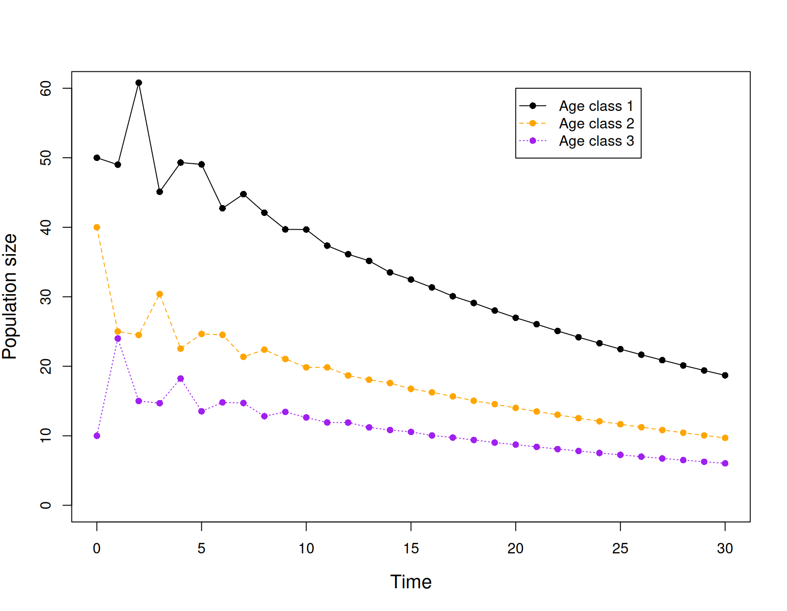
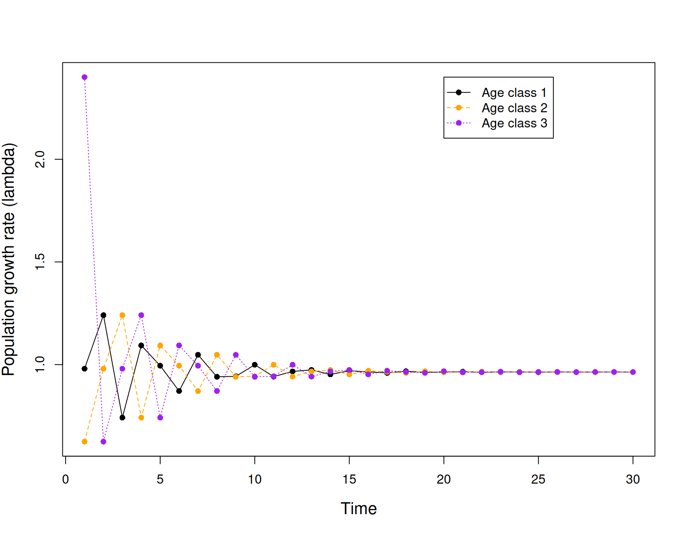
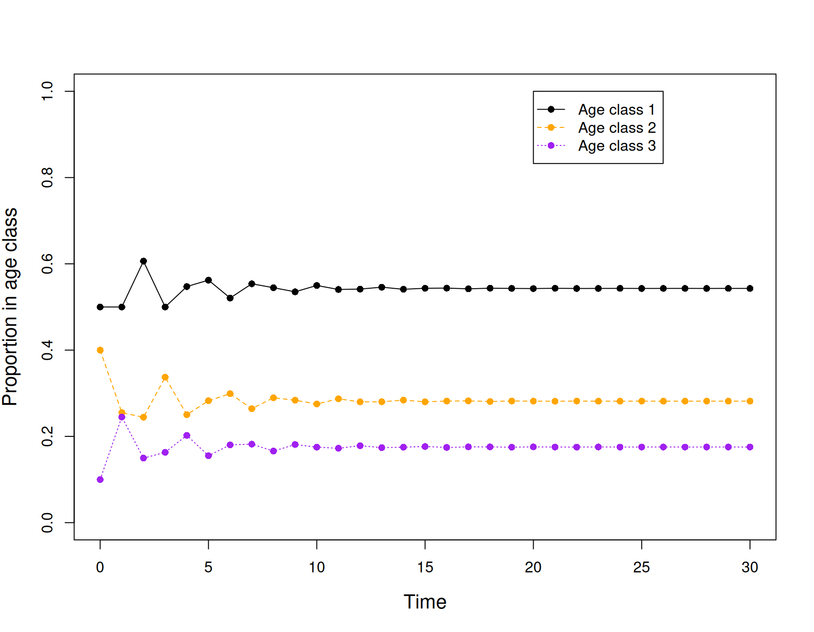
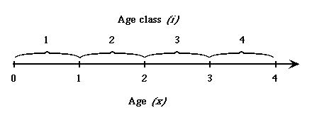
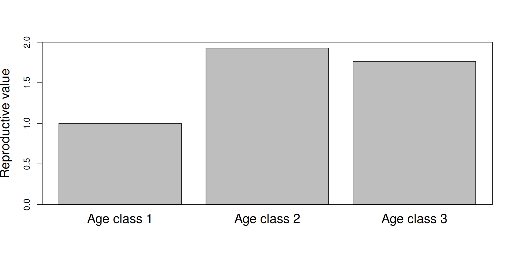

flowchart LR
n1(("$$n_{1,t}$$"))
n2(("$$n_{2,t}$$"))
n3(("$$n_{3,t}$$"))
n1 --> n2
n2 --> n3
n2 --> n1
n3 --> n1
Age-structured and stage-structured
population models
Birth and death rates usually depend on age.
Growth rates will differ between populations with different age structures.
Some age classes contribute more to population growth than others.
These facts have important management implications.

Declining populations have relatively more old individuals than growing populations.

Abundance of age class \(i\) in year \(t\) is denoted by \(n_{i,t}\).
The model for \(n_{i,t+1}\) depends on:
flowchart LR
n1(("$$n_{1,t}$$"))
n2(("$$n_{2,t}$$"))
n3(("$$n_{3,t}$$"))
n1 --> n2
n2 --> n3
n2 --> n1
n3 --> n1
| Age class | Equation |
|---|---|
| 1 | \(n_{1,t+1} = n_{1,t} \times f_1 + n_{2,t} \times f_2 + n_{3,t} \times f_3\) |
| 2 | \(n_{2,t+1} = n_{1,t} \times s_{1}\) |
| 3 | \(n_{3,t+1} = n_{2,t} \times s_{2}\) |
According to this particular age-structured model, all animals die after spending one time interval in the third age class.
In stage-structured models, animals can stay in a class for more than one time interval.
This implies an initial age distribution of:

| Age class | Initial population size | Survival probability | Fecundity rate |
| \(n_{i,1}\) | \(s_i\) | \(f_i\) | |
| 1 | 50 | 0.5 | 0.0 |
| 2 | 40 | 0.6 | 0.8 |
| 3 | 10 | 0.0 | 1.7 |



Age distribution converges to a stable age distribution when survival and fecundity rates are constant.
Stable age distribution is the proportion of individuals in each age class when the population converges.
Growth rates of each age class differ at first, but converge once the stable age distribution is reached.
Asymptotic growth rate is \(\lambda\) (without subscript).
Growth rate at the stable age distribution is the same for all age classes, and it is geometric!
Matrix models aren’t actually new models.
They are the same models we have been talking about.
But, they make it much easier to compute important quantities like \(\lambda\) and reproductive value.
Matrix models
Life tables

Definition: A matrix is a rectangular array of numbers
\[ { \bf A} = \begin{bmatrix} a_{1,1} & a_{1,2} & a_{1,3} & a_{1,4} \\ a_{2,1} & a_{2,2} & a_{2,3} & a_{2,4} \\ a_{3,1} & a_{3,2} & a_{3,3} & a_{3,4} \end{bmatrix} \]
What is it?
Example:
These two expressions are equivalent:
| Age class Equ | ation |
|---|---|
| 1 $n_ | {1,t+1} = n_{1,t} f_{1} + n_{2,t} f_{2} + n_{3,t} f_3$ |
| 2 $n_ | {2,t+1} = n_{1,t} s_{1}$ |
| 3 $n_ | {3,t+1} = n_{2,t} s_{2}$ |
AND
\[{\bf n}_{t+1} = {\bf A}\times {\bf n}_{t}\]
\[ \begin{bmatrix} aw + bx + cy + dz \\ ew + fx + gy + hz \\ iw + jx + ky + lz \\ mw + nx + oy + pz \end{bmatrix} = \begin{bmatrix} a & b & c & d \\ e & f & g & h \\ i & j & k & l \\ m & n & o & p \end{bmatrix} \times \begin{bmatrix} w \\ x \\ y \\ z \end{bmatrix} \]
\[ \begin{bmatrix} n_{1,t+1} \\ n_{2,t+1} \\ n_{3,t+1} \\ n_{4,t+1} \end{bmatrix} = \begin{bmatrix} f_1 & f_2 & f_3 & f_4 \\ s_1 & 0 & 0 & 0 \\ 0 & s_2 & 0 & 0 \\ 0 & 0 & s_3 & 0 \end{bmatrix} \times \begin{bmatrix} n_{1,t} \\ n_{2,t} \\ n_{3,t} \\ n_{4,t} \end{bmatrix} \]
Definition: The extent to which an individual in age class \(i\) will contribute to the ancestry of future generations.
\[ v_i = \sum_{j=i}^{I}\left(\prod_{h=i}^{j-1}s_h\right)f_j\lambda^{i-j-1} \]
Post-reproductive individuals have reproductive values of zero.
Depending on survival and fecundity rates, a first-year individual could have a higher or lower reproductive value than a second-year individual.

Net reproductive rate
The expected number of individuals produced by an individual over its lifetime:
\[ R_0 = \sum_{i=1}^I \left(\prod_{j=1}^{i-1} s_j\right)f_i \]
Generation time
The time required for a population to increase by a factor of \(R_0\).
\[ T = \frac{\log(R_0)}{\log(\lambda)} \]
The dominant eigenvalue of \({\bf A}\) is the growth rate \(\lambda\).
The right eigenvector is the stable age distribution.
The left eigenvector is the reproductive value.
Age isn’t always the best way to think about population structure.
For some populations, it is much more useful to think about size structure or even spatial structure.
These “stage-structured” models differ from age-structured models in that individuals can remain in a stage class (with probability \(1-p_i\)) for multiple time periods.
In stage-structured models, individuals transition from one stage to the next with probability \(p_i\).
We can add these transition probabilities to our projection matrix like this:
\[ {\bf A} = \begin{bmatrix} f_1 & f_2 & f_3 \\ s_1 & s_2(1-p_2) & 0 \\ 0 & s_2 p_2 & s_3 \end{bmatrix} \]
This example allows for individual to remain in stages 2 and 3 for more than one time period.
Vital rates (\(s\) and \(f\)) are usually age-specific.
Population growth will depend on age distribution.
If vital rates are constant, population will reach stable age distribution with constant growth rate \(\lambda\).
Reproductive value indicates which age class contributes the most to population growth.
Matrix models are a convenient method used to work with age-structured populations.